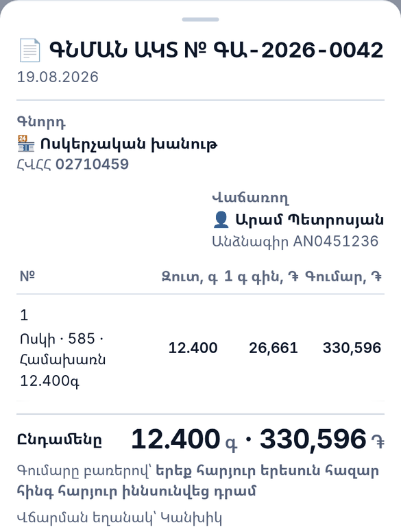

Ոսկերչական խանութի հաշվառում՝ քաշով և հարգով
Ոսկերիչը ջարդոն է գնում վաճառասեղանի մոտ եկած մարդուց և վաճառում պատրաստի իր։ 2026 թ. հուլիսի 1-ից ոսկու ԱԱՀ-ն հաշվվում է մարժայից՝ վաճառքի գնի և փաստաթղթավորված ինքնարժեքի տարբերությունից։ ԱԱՀ վճարող խանութի համար այդ փաստաթուղթը դառնում է հարկի հիմքը։
Այդ գրառումը մինչ օրս պահվում է տետրում կամ ընդհանրապես չի պահվում։ Իսկ սովորական պահեստի ծրագիրը հարցնում է «քանի՞ հատ» — հարց, որին ոսկերչական խանութը պատասխան չունի։
Այս էջում այլ թիվ չկա։ Շուկայի ծավալ, օգտագործողների քանակ և խնայողության տոկոս չենք գրում, որովհետև չունենք։
Տետրը չի ասում, թե ինչ է մնացել, չի հիշեցնում, որ մատանին 9 օր տեսչությունում է, և ակտ չի տպում։ ԱրմՈսկին ամեն շարժ գրում է մեկ մատյանում, որից ոչինչ չի ջնջվում. մնացորդը միշտ այդ մատյանի գումարն է, ուստի էկրանն ինքն իրեն չի հակասում։
ARMGOLD-ը գնի հաշվիչ է և վաճառքի գրանցամատյան, և լավն է հենց դրանում։ Բայց պահեստ չի վարում — մնացորդ, ինքնարժեք, գնման ակտ, գույքագրում և հարգադրոշմ այնտեղ չկան։ ԱրմՈսկին վերցնում է ARMGOLD-ի գնի բանաձևը անփոփոխ և դրա շուրջ կառուցում ամբողջ խանութը։ Երկուսը առանձին ծրագրեր են՝ առանձին տվյալներով։
Աշխատում է՝ օրվա գին, վաճառք, գնում ակտով, դարակ, գույքագրում ակտով, հարգադրոշմ, վերանորոգում, պարտքեր։ Բացվում է առանց ինտերնետի։ Դեռ չկա. մատակարարից ընդունումը, համաժամացումը, լուսանկարները, CSV-ն։ Ծրագիրը հարկ չի հաշվարկում — այն վարում է այն գրառումը, որի վրա հարկը հենվում է։
